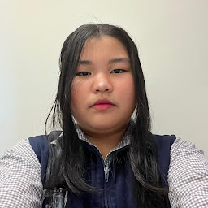

- Typically, I like to sing, dance, and draw !! sometimes, I even like to write for fun!
- Interests include listening to nice music and making up like fictional scenarios (bonus points if I decide to write about it, but it's every once in a blue moon.)
- My dreams include wanting to get better in the things that I care about, and I also wanna travel to other countries some more ^^
- My favorite quote (and possible vocal stim) has to be "Yeah, i'm the wizard, yeah." from the Wizard in the Nigerian Wicked skit of SNL -v-